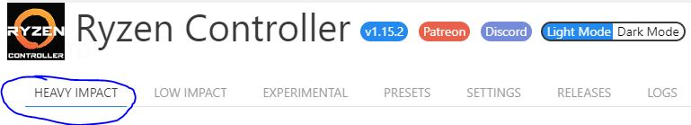
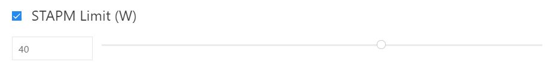

Ryzen Controller will re-apply ryzenadj every X seconds. Set to 0 to disable.
The main way to change your Ryzen CPUs TDP is by changing the STAMP watt value which you can find under the Heavy Impact menu.
You can change this value up if you wish to have a higher TDP which will allow the CPU more headroom for high boost speeds on both CPU and Vega Graphics at the cost of heat or you can choose a lower the value for a lower TDP which will give less head room for the CPU and Vega Graphics to boost but will run cooler.
Please note that truning this value up too much may cause crashes and or damage to the device so be careful
There are also other ways in which the TDP of your CPU can be changed if you were to scroll down from STAMP limit to the bottom of the page you will find PPT Fast Limit and PPT Slow limit. These are the TDP limits that the CPU will use when in boost which is PPT Fast and the TDP limits when the CPU is not boosting PPT Slow limit. Both limits like the STAMP limit can be altered up and down to your liking.
Please note that truning these values up too much may also cause crashes and or damage to the device so be careful
To apply these changes just scroll down to the bottom of the page and press on the blue apply button shown below from this point your changed settings will be set.

Please note if you have any problems with you PC after this a simple reboot will reset your PC back to its default settings.
You can get additional help from the community Discord server Here
The current settings will be saved to a new preset. Give it a name then you'll be able to reapply it fastly from the preset tab.
This is the data to be used by Ryzen Controller to import presets.
Paste here the presets and valid, your current presets will be merged with this.